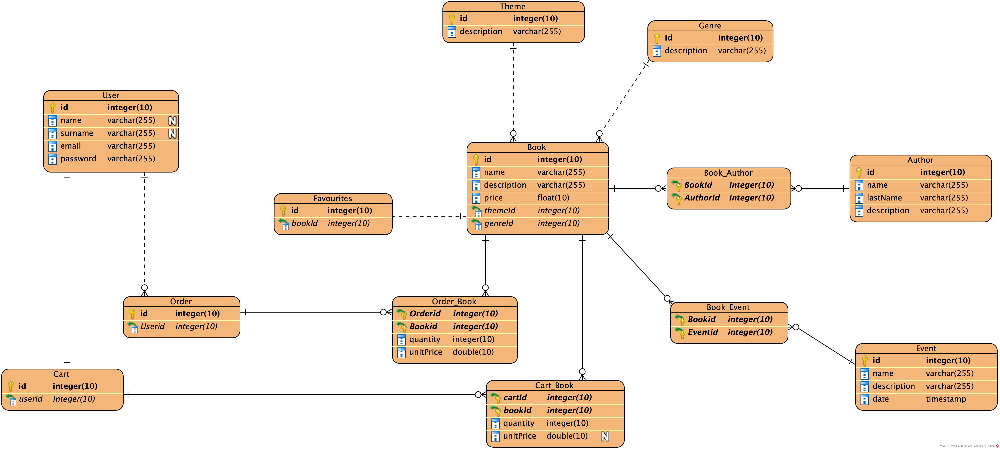

Documentation of the Backend part
| Member nº |
Role |
First Name |
Last Name |
Matricola |
Email address |
| 1 |
Designer / Frontend developer |
Arnab |
Dey |
|
arnab.dey@mail.polimi.it |
| 2 |
Frontend developer |
Julian |
Mangut |
|
jcuellarr@alumnos.unex.es |
| 3 |
Backend developer / Administrator |
Víctor |
Juez |
917281 |
victor.juez@mail.polimi.it |
- Deliverable D2: the YAML or JSON file containing the specification of the app API can be found at this address.
- Deliverable D3: the SwaggerUI page of the
same API is available at this address.
- Deliverable D4: the
source code of D0 is available as a zip file at this
address.
- Deliverable D5: the address of the online source control repository is available this address. We hereby declare that this is a private
repository and,
upon request, we will give access to the instructors.
Specification
Web Architecture

Describe here, with a diagram, the components of your web application and how they interact. Highlight which
parts belong to the application layer, data layer or presentation layer. How did you ensure that HTML is not
rendered server side?
We have followed the Fractal Structure
for this project, as we concluded it was the simplest and well defined structure for NodeJS backend implementation
we found.
-
Presentation Layer:
-
Frontend static-files:
It's the hole interface of the web applications, all the HTML, CSS and JacaScript files of the
application.
-
Backend documentation:
All the backend documentation needed for the project.
-
Application Layer:
-
API Routes:
Is the backend router, in charge of routing the HTTP requests to the application.
-
Actions:
Main backend component, where the logic of the application is implemented, after being redirected by the
router to the specific action, applies the corresponding logic of the action using and modifying the
necessary model objects.
-
Helpers:
Auxiliary functions for the application like data entry validation
-
Models:
Where data objects used by our ORM and the application are defined, they will be used and modified by
the action component.
Also it is in charge of applying the changes of the data objects to the
Database
-
Data Layer:
-
Database:
Our PostgreSQL database where all the data is stored. Accessed only by the Model component of the
Application Layer.
Regarding to the HTML files not being rendered served side, we used static-files function that Express JS web
application offers.
What it basically does is that the directory you specified as static will be served to the
client without being rendered on the server
API
REST compliance
Describe here to what extent did you follow REST principles and what are the reasons for which you might have
decided to diverge. Note, you must not describe the whole API here, just the design decisions.
The principles we have followed and how we followed them:
OpenAPI Resource models
Describe here synthetically, which models you have introduced for resources.
-
Users
Information about users and its details.
-
Authors
Contains useful information about the authors of the books in the application.
-
Books
Contains the information needed to define a book in the application.
-
Events
Contains the information about an event where a book is presented and its details.
-
Cart
Shopping cart details for users including the information about the books added in the cart.
-
Orders
Contains the information about an order including books and customer information.
Data Model
ER Diagram:

Describe with an ER diagram the model used in the data layer of your web application. How these map to the
OpenAPI data model?
As we can see we have the big six data classes: Users, Authors, Books, Events, Cart and Orders that we have already described above in the OpenAPI resoure model section, and then the other ones are used to make the relations needed between them.
We can observe that on the OpenAPI there are calls that its responses includes information about few of the big six data classes together, meaning that the other classes used for the relations have been involved.
Implementation
Tools used
Describe here which tools, languages and frameworks did you use for the backend of the application.
The backend has been developed with NodeJS on the server and a PostgreSQL database, and also the following tools and frameworks:
-
Joi:
Is an object schema description language and validator for JavaScript objects. Used in the login/register functionalities in order to validate the correct format of data inserted by the user.
-
Sequelize:
Is a NodeJS based ORM for PostgreSQL and other databases. It features solid transaction support, relations, eager and lazy loading, read replication and more. Used to simplify the database operations.
-
Express js:
Web framework for NodeJS. Provides a robust set of features for web and mobile applications
-
Passport-jwt:
This module lets you authenticate endpoints using a JSON web token. It is intended to be used to secure RESTful endpoints without sessions.
-
Morgan:
HTTP request logger middleware for node.js.
-
Body Parser
Node.js parsing middleware. Parse incoming request bodies in a middleware before your handlers, available under the req.body property.
Discussion
Describe here:
- How did you make sure your web application adheres to the provided OpenAPI specification?
Because the web application was developed in parellel alongside the OpenAPI specification, therefore in all moments any changes made in any of the two parts was applied into the others.
- Why do you think your web application adheres to common practices to partition the web application (static
assets vs. application data)
Because as said in the beginning of the documentation, the use of the Express js static-files function ensures that the frontend files sent to the client are not rendered in the server. Therefore the backend and the frontend are hardly separated.
- Describe synthetically why and how did you manage session state, what are the state change triggering
actions (e.g., POST to login etc..).
We used the passport-jwt module for that purpose, so when a user is logged into the system through a POST to login, the response of that call is a jwt-token which is an encrypted code that later on on the frontend is used to save it into the Local Storage of the browser. Then when a protected call to the API is done (needs authorization) this token is loaded from the fronted and added into the Authorization header parameter of the request to the API. Once this request is received in the backend, the system takes the token and checks its value with the passport-jwt module, and in case to be correct we have the user identificated.
- Which technology did you use (relational or a no-SQL database) for managing the data model?
We used a relational database, specifically PostgreSQL
Other Information
Task Assignment
Describe here how development tasks have been subdivided among members of the group, e.g.:
- Foo worked on front end (80%) and OpenAPI Spec (20% of the time)
- Bar worked on ....
Analysis of existing API
Describe here if you have found relevant APIs that have inspired the OpenAPI specification and why (at least
two).
Learning Outcome
What was the most important thing all the members have learned while developing this part of the project, what
questions remained unanswered, how you will use what you've learned in your everyday life? Examples:
- Foo learned to write SQL queries and Javascript but wanted to know more about caching, he's probably going
to create his own startup with what she has learned
- Bar learned how to deploy on a cloud platform, he would have liked to know more about promises for
asynchronous code..